Jiawei He
Researcher and PhD Advisor
Beijing Academy of Artificial Intelligence (BAAI) · Co-founder, XYZ Embodied AI
I am Jiawei He, a researcher/PhD Advisor at the Beijing Academy of Artificial Intelligence (BAAI). I also co-founded a company called XYZ Embodied AI in Beijing, which provides embodied AI solutions, including generalizable algorithms and an AI platform. Before that, I received my PhD degree in June 2024 from the Institute of Automation, Chinese Academy of Sciences, under the advisement of Prof. Zhaoxiang Zhang.
I lead XYZ-ASR (Algorithm & System Research), a research center jointly established by BAAI and XYZ Embodied AI. We recruit research interns and PhD students through the center.
From 2020 to 2022, I was a research intern at TuSimple, mentored by Zehao Huang and Naiyan Wang, focusing on Multiple Object Tracking and 3D Object Detection. Previously, I earned my BS degree from Xi'an Jiaotong University in 2019. During my undergraduate years, I joined the X-Plan project and was a research intern at the Institute of Artificial Intelligence and Robotics (IAIR) in XJTU from 2017 to 2018.
Google Scholar / GitHub / Email
2027 级博士招生名额已满。 All PhD positions for the 2027 intake have been filled.
XYZ-ASR is hiring on-site and remote research interns and full-time researchers and engineers in embodied AI, VLM/VLA, and 3D perception. Graduate and senior undergraduate students are welcome to apply for internships by email.
Research Interests
My research focuses on embodied AI, spatial intelligence, vision-language-action models, world models, and 3D perception. I also work on multiple object tracking, 3D reconstruction, learning-based combinatorial optimization, and image and video understanding and generation.
News
- DA-Nav was accepted to IEEE Robotics and Automation Letters (RA-L).
- AdaOcc was accepted to NeurIPS 2026.
- JEPA-WAM was released on arXiv.
- UniPart and RoboTracer were accepted to ECCV 2026.
- P3DTrack was accepted by IJCV.
- Call for 2027 PhD students (positions filled).
- OmniSpatial was accepted to ICLR 2026.
- SoFar (Spotlight) and DreamVLA were accepted to NeurIPS 2025.
- XYZ Embodied AI was founded in Beijing.
- Three papers were accepted to ICCV 2025, including DexVLG (Highlight).
Publications
Google Scholar2026
-

DA-Nav: Direction-Aware City-Scale Vision-Language Navigation.
Ye Yuan*, Kehan Chen*, Xinqiang Yu*, Wentao Xu, Heng Wang, et al., Jiawei He†, Zhulin An†.
IEEE Robotics and Automation Letters (RA-L), 2026.
-

AdaOcc: Adaptive 3D Occupancy Prediction for Embodied Tasks.
Jinglong Wang*, Yunjie Wang*, Zhiyang Zhang*, Jiawei He†, Ye Yuan, Bo Qiu†, Jing Zhang†.
NeurIPS 2026.
-

-

Towards Spatial Trace with Reasoning in Vision-Language Models for Robotics.
Enshen Zhou*, Yibo Li*, Jingkun An*, Jiayuan Zhang*, Shanyu Rong, Mengzhen Liu, Yi Han, Yuheng Ji, Huajie Tan, Jiawei He, Pengwei Wang, Zhongyuan Wang, Cheng Chi, Lu Sheng, Shanghang Zhang.
ECCV 2026.
-

-

-
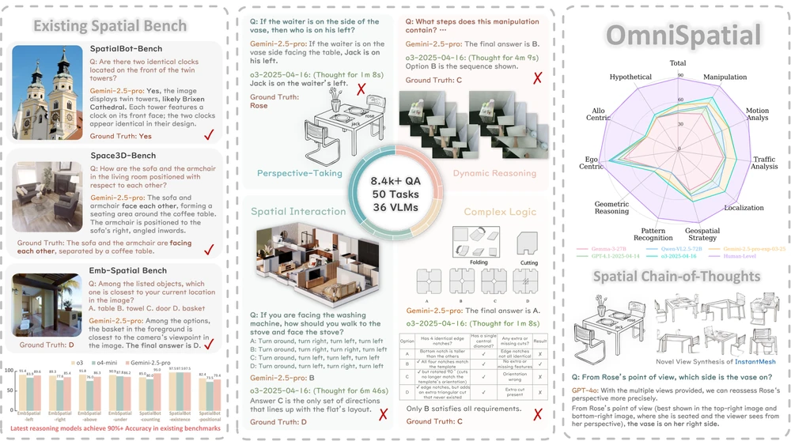
OmniSpatial: Towards Comprehensive Spatial Reasoning Benchmark for Vision Language Models.
Mengdi Jia*, Zekun Qi*, Shaochen Zhang, Wenyao Zhang, Xinqiang Yu, Jiawei He, He Wang, Li Yi.
ICLR 2026.
-
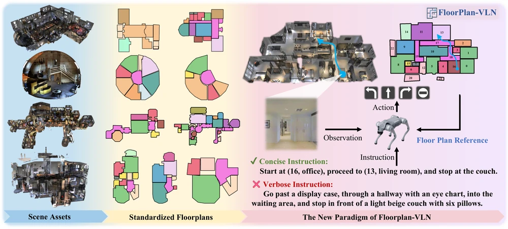
2025
-

SoFar: Language-Grounded Orientation Bridges Spatial Reasoning and Object Manipulation.
Zekun Qi*, Wenyao Zhang*, Yufei Ding*, Runpei Dong, XinQiang Yu, Jingwen Li, Lingyun Xu, Baoyu Li, Xialin He, Guofan Fan, Jiazhao Zhang, Jiawei He, Jiayuan Gu, Xin Jin, Kaisheng Ma, Zhizheng Zhang, He Wang, Li Yi.
NeurIPS 2025 Spotlight.
-
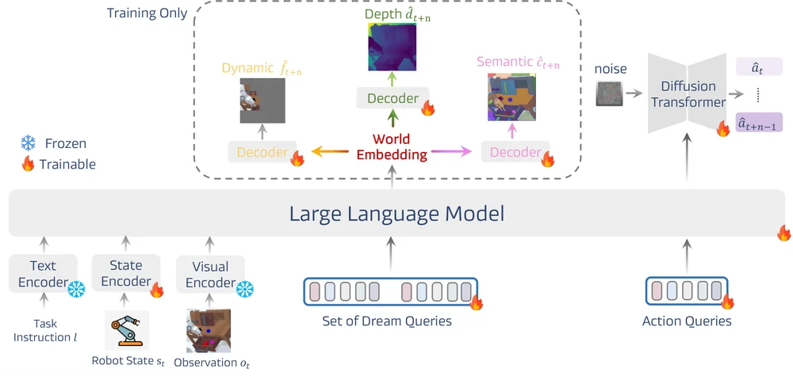
-
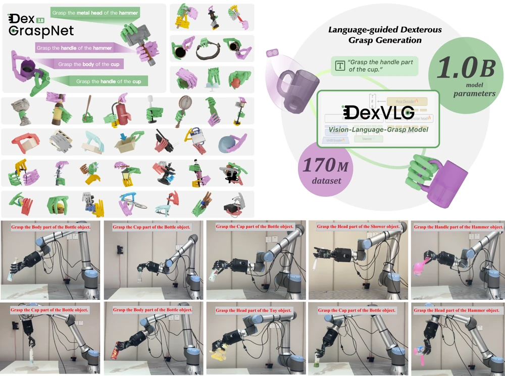
-
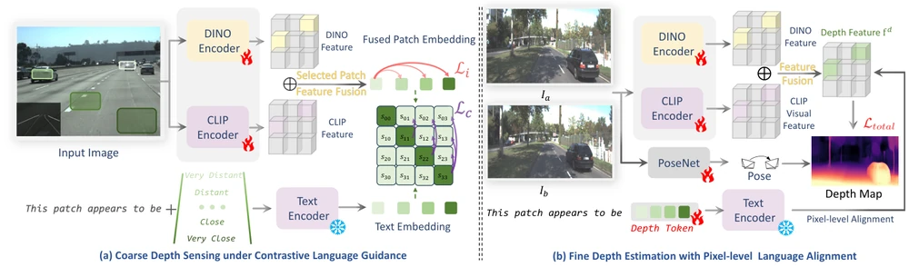
Hybrid-grained Feature Aggregation with Coarse-to-fine Language Guidance for Self-supervised Monocular Depth Estimation.
Wenyao Zhang, Hongsi Liu, Bohan Li, Jiawei He, Zekun Qi, Yunnan Wang, Shengyang Zhao, Xinqiang Yu, Wenjun Zeng, Xin Jin.
ICCV 2025.
-
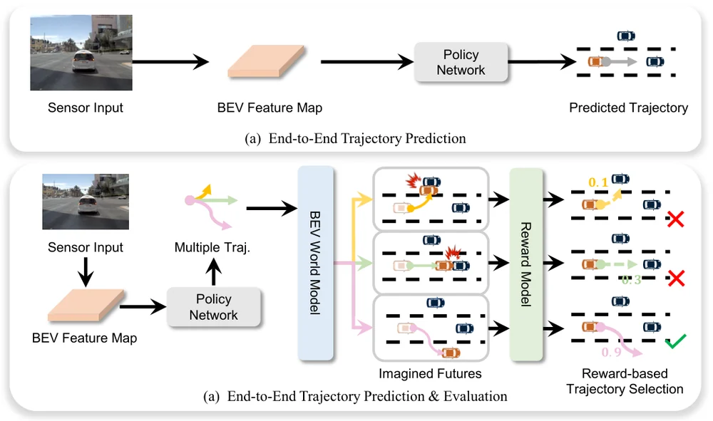
End-to-End Driving with Online Trajectory Evaluation via BEV World Model.
Yingyan Li, Yuqi Wang, Yang Liu, Jiawei He, Lue Fan, Zhaoxiang Zhang.
ICCV 2025.
-
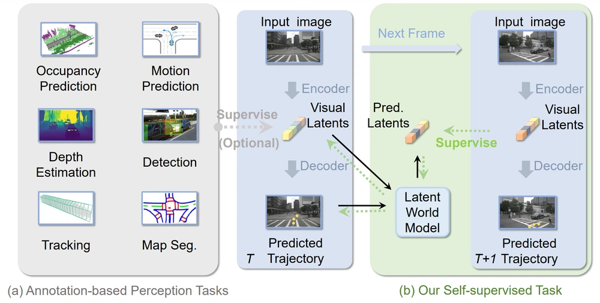
Enhancing End-to-End Autonomous Driving with Latent World Model.
Yingyan Li, Lue Fan, Jiawei He, Yuqi Wang, Yuntao Chen, Zhaoxiang Zhang, Tieniu Tan.
ICLR 2025.
2024 and earlier
-
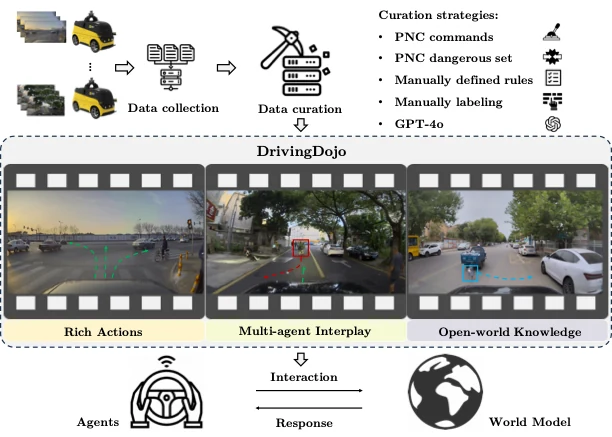
DrivingDojo Dataset: Advancing Interactive and Knowledge-Enriched Driving World Model.
Yuqi Wang*, Ke Cheng*, Jiawei He*, Qitai Wang*, Hengchen Dai, Yuntao Chen, Fei Xia, Zhaoxiang Zhang.
NeurIPS 2024 Datasets & Benchmarks.
-
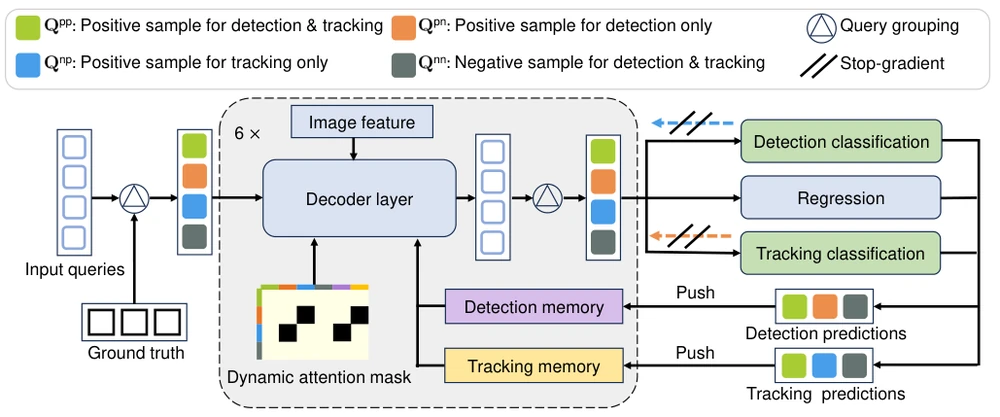
OneTrack: Demystifying the Conflict Between Detection and Tracking in End-to-End 3D Trackers.
Qitai Wang, Jiawei He, Yuntao Chen, Zhaoxiang Zhang.
ECCV 2024.
-

-

Driving into the Future: Multiview Visual Forecasting and Planning with World Model for Autonomous Driving.
Yuqi Wang*, Jiawei He*, Lue Fan*, Hongxin Li*, Yuntao Chen, Zhaoxiang Zhang.
CVPR 2024.
paper · project · code · 机器之心 (In Chinese)
-
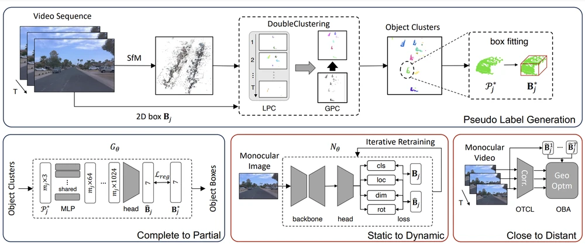
-
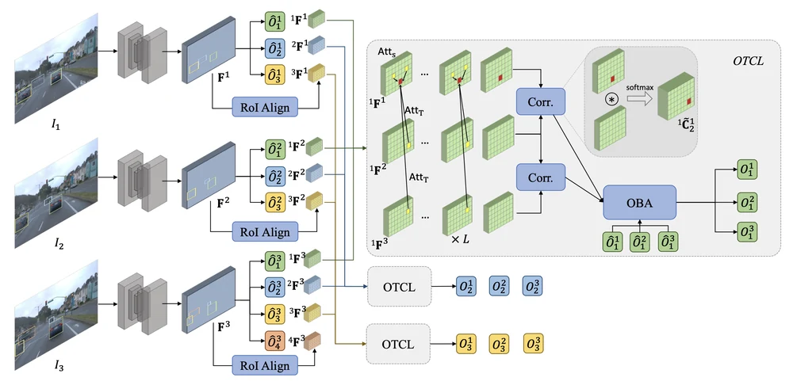
-
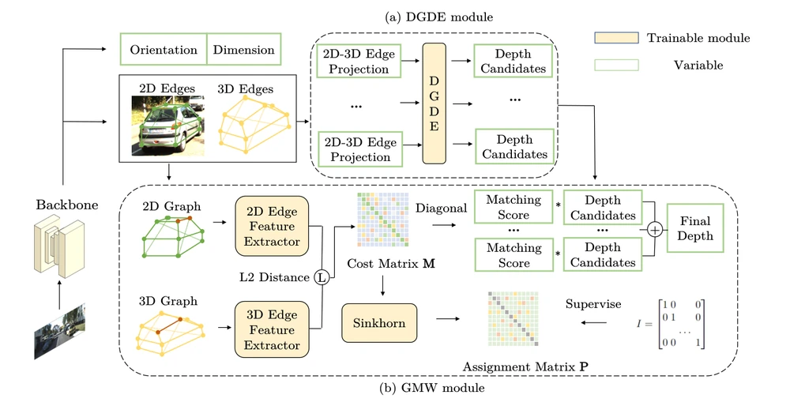
-
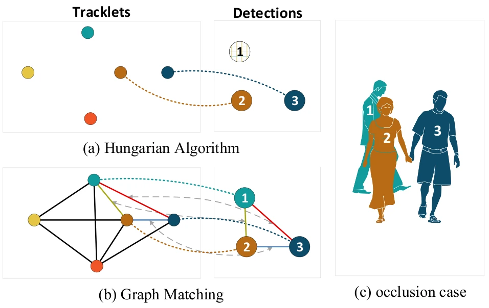
* Equal contribution. † Corresponding author.
Presentations
- Reconstruction-based 3D Perception. CRIPAC Summer Symposium, July 16, 2023. Slides
Professional Services
- Conference reviewer: ICLR, ICML, NeurIPS, CVPR, ECCV, ICCV, ACMMM, ACCV.
- Journal reviewer: IJCV, TIP, PR, SCIS, TNNLS, TCSVT, Information Fusion, TBIOM.
Contact
Beijing XYZ Embodied AI Co., Ltd.
Block A, Dinghao DH3 Building, Haidian District, Beijing, China
北京星源智机器人科技有限公司
北京市海淀区鼎好 DH3 大厦 A 座
Email: jwhe2024@gmail.com · hejiawei@xyz-eai.com